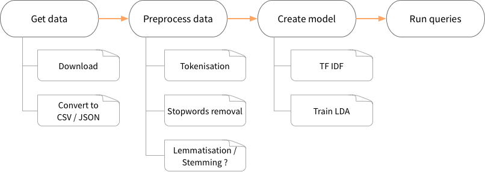

Spark
In this workshop, we will create a search engine for BBC articles using pyspark and the Spark ML library.
Introduction
What we will do
To create the search engine, we will do the following steps:

What we will use
LSA, latent semantic anlysis is
a technique in natural language processing, in particular distributional semantics, of analyzing relationships between a set of documents and the terms they contain by producing a set of concepts related to the documents and terms (source: wikipedia)
In summary, we want to establish underlying relationships between documents in a collection by linking documents and terms through concepts. Those concepts are deduced or constructed through a statistical or mathematical algorithm that forms a model. Once we have the model, we can begin using it for search queries.
Available algorithms
There are two well-known methods for discovering underlying topics:
-
SVD, Singular Value Decomposition: is a mathematical method for decomposing a matrix into a product of smaller matrices. It has the advantage of being mathematically correct: computing the model, hence the decomposed matrices, takes only one pass and is deterministic: the same data will always give the same result (as long as the same parameters are used).
-
LDA, Latent Dirichlet Allocation, is a generative probabilistic model. Based on statistics, many iterations are necessary to get a good-enough model and every run could give a different result. The result is also highly dependant on the parameters we use for the training.
In this workshop, we will use the LDA technique.
LDA Basics
LDA is like a clustering algorithm where :
- the cluster centers are the topics;
- the training examples are documents;
- the features are the word frequencies;
- the distance is
euclideanbased on a statistical model (Bayesian inference rules / Dirichlet distribution)
As in clustering, we need to give some informations (parameters) to the model. The most important one is the number of topics (k) we think there is (exactly as we need to specify the number of clusters to find).
During training, the model will first assign each document to a random topic. Then, on each iteration, it computes how well the actual topic distribution describes/predicts each document, makes adjustments and try again. Most of the time, the programmer will set in advance the maximum number of iterations to do.
In the end, the model outputs a topic distribution over document (how much a document is important to a given topic) and over terms (how much the term describes the topic). Documents with similar topic distributions are likely to be similar, even if they don't use the same words.
LDA with pyspark
Getting the dataset
The dataset "Dataset: BBC" available at: http://mlg.ucd.ie/datasets/bbc.html (we used the raw text files). It consists of 2225 documents from the BBC news website corresponding to stories in five topical areas (business, entertainment, politics, sport and tech) from 2004-2005.
Since the dataset comes in multiple folders and with some duplicates, we already processed it and made it available in csv or json format. If you are interested, you can get the python script we used for the parsing.
For the workshop, download bbc.json and save it in the snorkel/zeppelin/data folder.
Loading the dataset into Spark
Create a new notebook. On the first cell, ensure that the bbc.json file is were it should be by running:
%sh ls data/bbc.json
The file should be listed in the output.
Now, let's load those data into a Spark dataframe (documentation):
%pyspark dataset = spark.read.json('data/bbc.json')
Ensure this worked by inspecting the dataset:
%pyspark print("number of documents: %d" % dataset.count()) print("structure: %s" % dataset.describe()) dataset.show()
number of documents: 2096 structure: DataFrame[summary: string, category: string, content: string, filename: string, title: string] ...
Adding IDs and creating lookup tables
In order to keep track of our articles, let's give each line of our "table" a unique ID:
%pyspark from pyspark.sql.functions import monotonically_increasing_id from pyspark.sql.types import LongType # This will return a new DF with all the columns + id dataset = dataset.withColumn("id", monotonically_increasing_id()) dataset.show(5)
Then, it would be nice to be quickly able to get an ID given a title and vice-versa. So let's create lookup dictionaries:
%pyspark docTitles = dict([(r[0], r[1]) for r in dataset.select("id", "title").collect()]) docIds = dict([(r[1], r[0]) for r in dataset.select("id", "title").collect()])
In those lines, we select two columns from our dataframe: id and title. Using collect, we ask Spark to actually execute the selection (it is an action) and get the results into a list of Row. A Row behaves like an untyped array. We convert our rows into tuples and finally cast the list of tuples into a dictionary for quick lookup.
To ensure it works, try to lookup the title of the document with ID 0: docTitles[0].
Features extraction
In our case, the feature extraction is applied on the articles body (column content) and contains the following steps:
- breaking content into words (tokenisation)
- removing common words (stopwords removal)
- computing the frequencies of each word (count vectors) and selecting a subset of words (vocabulary)
- computing the TF-IDF over documents and vocabulary
As you will see, all those steps are very common and can be performed using Spark ML utilities.
Tokenisation
The first thing to do is to break our article's content into tokens.
Have a look at the Spark ML documentation and try to figure out how to tokenise our content column: Spark ML documentation: tokenizer.
Tips: discard words of less than 4 characters, save the result into a tokens column.
Solution
We use the RegexTokenizer with the following arguments:
regex: break by white space character(s)inputCol: name of the input column, herecontentoutputCol: name of the new column with tokens, heretokensminTokenLength: discard tokens with length < 4
%pyspark # import the RegexTokenizer class from pyspark.ml.feature import RegexTokenizer # create a new tokenizer instance tokenizer = RegexTokenizer(pattern="[\\W_]+", inputCol="content", outputCol="tokens", minTokenLength=4) # tokenise (and select only the interesting columns to gain space) tokenized_df = tokenizer.transform(dataset).select("id", "title", "content", "tokens")
To visualize the results, lets print the first 100 characters of the first article and some of the resulting tokens:
%pyspark content = tokenized_df.select("content").first() tokens = tokenized_df.select("tokens").first() print("content: %s..." % content[0][:100]) print("tokens: %s.." % ", ".join(tokens[0][:10]))
Result:
content: Quarterly profits at US media giant TimeWarner jumped 76% to $1.13bn (£600m) for the three months to... tokens: quarterly, profits, media, giant, timewarner, jumped, 13bn, 600m, three, months..
The difficulties of tokenisation
Tokenisation is very important in language processing, but it is not an easy task. Here, we separated words based on spaces and removed small words. But is it always a good idea ? It depends... For example:
quarterly profit→quarterly,profitseems good. But what aboutNew York? Breaking it down into two tokens might change the way our search engine treats a query aboutNew York... Indeed, if it is considered two tokens, a document with a text "there is a new professor at the York university" becomes relevant as well;- By removing small words, we might loose informations, such as
USorUSA; - Here, our tokeniser treats
13bnor600mas tokens. But we can wonder if words with non-letter characters should be kept or not.
In real-life applications, the tokenizer is often way more complex and augmented with context-sensitive rules and heuristics.
Stopwords removal
We want to remove common words that are likely to appear in every document, hence not very informative. Here, we will use the following:
%pyspark # stopwords to use: copy-paste it into a cell stopwords = "bove,abst,accordance,according,accordingly,across,act,actually,added,adj,affected,affecting,affects,after,afterwards,again,against,ah,all,almost,alone,along,already,also,although,always,am,among,amongst,an,and,announce,another,any,anybody,anyhow,anymore,anyone,anything,anyway,anyways,anywhere,apparently,approximately,are,aren,arent,arise,around,as,aside,ask,asking,at,auth,available,away,awfully,b,back,be,became,because,become,becomes,becoming,been,before,beforehand,begin,beginning,beginnings,begins,behind,being,believe,below,beside,besides,between,beyond,biol,both,brief,briefly,but,by,c,ca,came,can,cannot,can't,cause,causes,certain,certainly,co,com,come,comes,contain,containing,contains,could,couldnt,d,date,did,didn't,different,do,does,doesn't,doing,done,don't,down,downwards,due,during,e,each,ed,edu,effect,eg,eight,eighty,either,else,elsewhere,end,ending,enough,especially,et,et-al,etc,even,ever,every,everybody,everyone,everything,everywhere,ex,except,f,far,few,ff,fifth,first,five,fix,followed,following,follows,for,former,formerly,forth,found,four,from,further,furthermore,g,gave,get,gets,getting,give,given,gives,giving,go,goes,gone,got,gotten,h,had,happens,hardly,has,hasn't,have,haven't,having,he,hed,hence,her,here,hereafter,hereby,herein,heres,hereupon,hers,herself,hes,hi,hid,him,himself,his,hither,home,how,howbeit,however,hundred,i,id,ie,if,i'll,im,immediate,immediately,importance,important,in,inc,indeed,index,information,instead,into,invention,inward,is,isn't,it,itd,it'll,its,itself,i've,j,just,k,keep,keeps,kept,kg,km,know,known,knows,l,largely,last,lately,later,latter,latterly,least,less,lest,let,lets,like,liked,likely,line,little,'ll,look,looking,looks,ltd,m,made,mainly,make,makes,many,may,maybe,me,mean,means,meantime,meanwhile,merely,mg,might,million,miss,ml,more,moreover,most,mostly,mr,mrs,much,mug,must,my,myself,n,na,name,namely,nay,nd,near,nearly,necessarily,necessary,need,needs,neither,never,nevertheless,new,next,nine,ninety,no,nobody,non,none,nonetheless,noone,nor,normally,nos,not,noted,nothing,now,nowhere,o,obtain,obtained,obviously,of,off,often,oh,ok,okay,old,omitted,on,once,one,ones,only,onto,or,ord,other,others,otherwise,ought,our,ours,ourselves,out,outside,over,overall,owing,own,p,page,pages,part,particular,particularly,past,per,perhaps,placed,please,plus,poorly,possible,possibly,potentially,pp,predominantly,present,previously,primarily,probably,promptly,proud,provides,put,q,que,quickly,quite,qv,r,ran,rather,rd,re,readily,really,recent,recently,ref,refs,regarding,regardless,regards,related,relatively,research,respectively,resulted,resulting,results,right,run,s,said,same,saw,say,saying,says,sec,section,see,seeing,seem,seemed,seeming,seems,seen,self,selves,sent,seven,several,shall,she,shed,she'll,shes,should,shouldn't,show,showed,shown,showns,shows,significant,significantly,similar,similarly,since,six,slightly,so,some,somebody,somehow,someone,somethan,something,sometime,sometimes,somewhat,somewhere,soon,sorry,specifically,specified,specify,specifying,still,stop,strongly,sub,substantially,successfully,such,sufficiently,suggest,sup,sure,t,take,taken,taking,tell,tends,th,than,thank,thanks,thanx,that,that'll,thats,that've,the,their,theirs,them,themselves,then,thence,there,thereafter,thereby,thered,therefore,therein,there'll,thereof,therere,theres,thereto,thereupon,there've,these,they,theyd,they'll,theyre,they've,think,this,those,thou,though,thoughh,thousand,throug,through,throughout,thru,thus,til,tip,to,together,too,took,toward,towards,tried,tries,truly,try,trying,ts,twice,two,u,un,under,unfortunately,unless,unlike,unlikely,until,unto,up,upon,ups,us,use,used,useful,usefully,usefulness,uses,using,usually,v,value,various,'ve,very,via,viz,vol,vols,vs,w,want,wants,was,wasnt,way,we,wed,welcome,we'll,went,were,werent,we've,what,whatever,what'll,whats,when,whence,whenever,where,whereafter,whereas,whereby,wherein,wheres,whereupon,wherever,whether,which,while,whim,whither,who,whod,whoever,whole,who'll,whom,whomever,whos,whose,why,widely,willing,wish,with,within,without,wont,words,world,would,wouldnt,www,x,y,yes,yet,you,youd,you'll,your,youre,yours,yourself,yourselves,you've,z,zero,article,about,writes,entry,well,will,newsgroup".split(",")
Look at the Spark ML documentation to remove all the stopwords from our tokens column using a StopWordsRemover.
Solution
The code is very similar to the tokenisation one:
%pyspark from pyspark.ml.feature import StopWordsRemover remover = StopWordsRemover(inputCol="tokens", outputCol="filtered", stopWords=stopwords) filtered_df = remover.transform(tokenized_df)
To visualise the results, let's print the first 18 tokens of a document, with and without stopwords:
%pyspark tokens = filtered_df.select("tokens").first() filtered_tokens = filtered_df.select("filtered").first() print(" tokens: %s" % ", ".join(tokens[0][:18])) print("filtered: %s" % ", ".join(filtered_tokens[0][:18]))
Result:
tokens: quarterly, profits, media, giant, timewarner, jumped, 13bn, 600m, three, months, december, from, 639m, year, earlier, firm, which, biggest filtered: quarterly, profits, media, giant, timewarner, jumped, 13bn, 600m, three, months, december, 639m, year, earlier, firm, biggest, investors, google
from and which have been removed.
Word frequencies and vocabulary
Using the Spark ML CountVectorizer, try to find how to create a model with a vocabulary of 3000 words and a minimum document frequency of 5. Then, use the model over our filtered_df dataset to create a new column named token_counts.
Solution
%pyspark from pyspark.ml.feature import CountVectorizer vocabSize = 3000 # the maximum number of term to retain minDF = 5 # the minimum number of different documents a # term must appear in to be included in the vocabulary. vectorizer = CountVectorizer(inputCol = "filtered", outputCol = "token_counts", vocabSize=vocabSize, minDF=minDF) count_model = vectorizer.fit(filtered_df) # create model counted_df = count_model.transform(filtered_df) # apply model to our df vocabulary = count_model.vocabulary # extract the vocabulary
If you look at our token_counts column, here is what we get:
%pyspark first_doc_freqs = counted_df.select("token_counts").first() first_doc_freqs[0]
SparseVector(3000, {0: 4.0, 2: 2.0, 8: 2.0, 9: 2.0, 11: 1.0, 13: 1.0, 14: 2.0, 25: 1.0, 32: 2.0, 40: 3.0, 43: 1.0, 44: 1.0, 47: 1.0, 55: 1.0, 56: 1.0, 57: 2.0, 65: 2.0, 67: 1.0, 68: 1.0, 69: 2.0, 71: 1.0, 85: 1.0, 89: 1.0, 102: 1.0, 109: 1.0, 115: 1.0, 118: 1.0, 119: 1.0, 123: 1.0, 132: 1.0, 137: 2.0, 140: 4.0, 149: 1.0, 150: 1.0, 156: 1.0, 159: 1.0, 160: 1.0, 161: 1.0, 170: 2.0, 179: 3.0, 189: 1.0, 190: 1.0, 202: 1.0, 205: 1.0, 209: 2.0, 227: 1.0, 248: 1.0, 249: 1.0, 261: 1.0, 283: 1.0, 300: 2.0, 327: 1.0, 331: 2.0, 333: 1.0, 340: 3.0, 342: 1.0, 360: 5.0, 364: 2.0, 410: 1.0, 440: 1.0, 464: 1.0, 467: 1.0, 489: 1.0, 498: 1.0, 504: 1.0, 544: 2.0, 549: 1.0, 560: 1.0, 562: 1.0, 589: 2.0, 632: 1.0, 687: 4.0, 742: 2.0, 779: 1.0, 780: 1.0, 797: 1.0, 806: 3.0, 828: 1.0, 890: 1.0, 931: 1.0, 938: 1.0, 951: 1.0, 960: 1.0, 971: 1.0, 1017: 2.0, 1066: 1.0, 1129: 1.0, 1177: 2.0, 1290: 1.0, 1311: 1.0, 1360: 1.0, 1437: 1.0, 1451: 1.0, 1462: 1.0, 1597: 2.0, 1639: 1.0, 1674: 1.0, 1719: 1.0, 1732: 1.0, 1733: 1.0, 1906: 1.0, 1987: 1.0, 2034: 1.0, 2090: 1.0, 2120: 1.0, 2188: 1.0, 2199: 1.0, 2265: 1.0, 2305: 2.0, 2306: 1.0, 2392: 1.0, 2443: 1.0, 2467: 1.0, 2670: 1.0, 2742: 1.0})
About SparseVector
A sparse vector is just a way to compress a vector when it is filled mainly with zeroes. The idea is to only keep track of the length of the vector and the cells with a non-zero value. So in this SparseVector, we have 3000 entries. Index 0 has value 4, index 1 has value 0, index 2 has value 2, etc. Each index corresponds to the token at the same index in the vocabulary.
You can convert a SparseVector back into a "normal" vector (called a DenseVector) using:
from pyspark.ml.linalg import Vectors Vectors.Dense(mySparseVector)
The token_counts column contains a vector of length len(vocabulary). The value at index x corresponds to the frequency of the token at index x in the vocabulary:
first_doc_freqs = counted_df.select("token_counts").first()[0] print("frequencies of the first ten words of the vocabulary in the first document:") for i in range(10): print("%-10s: %d" % (vocabulary[i], first_doc_freqs[i]))
Result:
frequencies of the first ten words of the vocabulary in the first document: year : 4 people : 0 time : 2 government: 0 years : 0 best : 0 told : 0 game : 0 three : 2 film : 2
TF-IDF
The term frequency–inverse document frequency (TF-IDF) is often used in information retrieval and search engine. The basic idea is:
- the more often a searched term appears in a document, the more relevant the document is relative to the search (term frequency);
- the more often a term appears in a corpus of document, the less informative/discriminative it is (inverse document frequency).
So the TF-IDF is a way to give different weights to search terms and results, in order to get more relevant results.
We already computed the term frequencies using the CountVectorizer. The only thing left to do is to compute the IDF:
$$
idf_t = \frac{N}{df_t}
$$
where N is the number of documents in the corpus and dft is the number of documents in which t appears.
In Spark ML, the IDF class takes care of everything:
IDF is an Estimator which is fit on a dataset and produces an IDFModel. The IDFModel takes feature vectors (generally created from HashingTF or CountVectorizer) and scales each column. Intuitively, it down-weights columns which appear frequently in a corpus.
%pyspark from pyspark.ml.feature import IDF idf = IDF(inputCol = "token_counts", outputCol = "features") idf_model = idf.fit(counted_df) # apply the model and keep only the relevant columns features_df = idf_model.transform(counted_df).select("id", "title", "content", "features")
Creating the model
Now, that we have our features, let's train an LDA model.
There are many parameters to fine-tune an LDA model. Right now, we will just set two of them:
k: the number of topics (or clusters) to find;maxIter: the maximum number of iterations to do.
Based on the LDA example, we create the model with:
%pyspark from pyspark.ml.clustering import LDA # set parameters k = 10 # number of topics maxIter = 10 # low boundary: might not be incredible, but it will be quick # train a LDA model. lda = LDA(k=k, maxIter=maxIter, featuresCol="features") model = lda.fit(features_df) # Add the result to the dataframe transformed = model.transform(features_df)
The LDA model gives us two important things:
model.topicsMatrix(): the inferred topics, where each topic is represented by a distribution over terms. It is a matrix of sizelen(vocabulary)xk, where each column is a topic: value at row 1 and column 2 tells the importance of term 1 for topic 2.- the column
topicDistributionin thetransformeddataframe: it is a vector of sizekwhose values are the importance of the document for each topic;
Having the relations term ↔ topic and topic ↔ document, we can also deduce the relations term ↔ document (transitivity).
Describing the topics
Ok, now let's look at our topics. The model is not able to tell us exactly what they are, but we can list the most relevant terms of the vocabulary for each topic:
%pyspark # This returns a DataFrame[topic: int, termIndices: array<int>, termWeights: array<double>] topics = model.describeTopics(5) # get the top 5 words # Let's replace the termIndices by the actual terms topics_descr = topics.rdd.map(lambda r: (r[0], [vocabulary[i] for i in r[1]])).collect() # use a zeppelin trick to display a nice table: print("The topics described by their top-weighted terms:") print("%table\nid\tterms") for r in topics_descr: print("%s\t%s" % (r[0], ", ".join(r[1])))
Printing tables with Zeppelin
If you output the %table shebang followed by lines (ending with \n) with tabs (\t), Zeppelin automagically convert it to a table. Example:
%pyspark print(""" %table header 1 header 2 cell 1,1 cell 1,2 cell 2,1 cell 2,1 """)
QueryEngine
To simplify, here is a python script defining a QueryEngine class.
Creating a QueryEngine
Either copy-paste its content to a new cell or save it to zeppelin/data and import it to the notebook using the following snippet:
%pyspark exec(open('data/QueryEngine.py').read())
QueryEngine methods
You can type help(QueryEngine) in a new cell to get the list of available methods. Here is a summary:
showDoc(docId): returns the title and content of a document as a string;topDocsForDoc(docId, top=10): returns the most relevant documents for a given document;topDocsForTerm(termId, top=10): returns the most relevant documents for a given term;topDocsForTermQuery(termIds, top=10): returns the most relevant document for a given list of terms;topTermsForTerm(termId, top=10): returns the most relevant terms for a given term.
Create a new QueryEngine instance:
%pyspark q = QueryEngine(model, transformed, vocabulary, idf_model)
Using the QueryEngine
Type help(q) to list the QueryEngine method and try the different search functions.
You might notice that the QueryEngine works with term and document IDs.
To work with term ids, use the vocabulary:
vocabulary.index("computer"): returns the id of the term computer, or-1if the term is not in the vocabulary;vocabulary[10]: returns the term at id10;
For documents, use the lookup tables created at the beginning:
docTitles[0]: returns the title of document0;docIds['Awesome title']: returns the ID of the document with title Awesome title;
To display the results nicely, you can use the result2tables(result) method, or simply call toTable() on the results.
Here is an example:
%pyspark # looking for documents related to term "computer" termId = vocabulary.index("computer") q.topDocsForTerm(termId).toTable() # or: results2table(q.topDocsForTerm(termId))
Interactive queries
Search in titles
First, let's have an interactive cell to search in the document titles.
The z.input(name, default_value) let's you create an interactive form.
The filter method on a dataframe accepts an SQL like clause. For example id > 300, content LIKE '%computer%' or lower(title) = 'weak dollar hits reuters'.
Using this, we can create an interactive form for searching for strings in the title:
%pyspark terms = z.input("search in title:", "computer") # get input from the user # do the query results = transformed\ .select("id", "title")\ .filter("lower(title) LIKE '%" + terms + "%'")\ .collect() # print the results print("%table") print("id\ttitle") for row in results: print("%d\t%s" % (row[0], row[1]))
Top docs for term
Try to write an interactive query where the user enters a term and the system displays the most relevant documents.
Be careful: you need to ensure the term is part of the vocabulary (and retrieve its ID) before calling the QueryEngine.
Solution
Here is one way to do it:
%pyspark import random # get the input term = z.input("term:") if term != "" and term in vocabulary: # the term is in the vocabulary, we can proceed termId = vocabulary.index(term) print("results for term: %s (%d)" % (term, termId)) q.topDocsForTerm(termId).toTable() else: # oups: not in the vocabulary. List some random terms instead. print("%s is not in the vocabulary. Try: %s..." % (term, ", ".join(random.sample(vocabulary, 10)) ))
Top docs for terms
Here, we do quite the same as above, but let the user enter multiple terms (the relevant QueryEngine method is topDocsForTermQuery).
Solution
%pyspark import random # get the input terms = z.input("terms, space-separated:") # prepare random terms random_terms = ", ".join(random.sample(vocabulary, 10)) if term != "": # the term is in the vocabulary, we can proceed termIds = [vocabulary.index(t) for t in terms.split(" ") if t in vocabulary] if len(termIds) > 0: print("looking for documents matching %s" % [vocabulary[id] for id in termIds]) q.topDocsForTermQuery(termIds).toTable() else: print("sorry, those terms are not in the vocabulary. Try: %s" % random_terms) else: # no input. Suggest some terms print("Try: %s..." % random_terms)
Top docs for doc
Here is a code for creating a dropdown with document titles:
%pyspark # tip: for better performances, move the next line to its own cell and execute it once only docSelection = [(r[0], "%d - %s" % (r[0], r[1])) for r in transformed.select("id", "title").collect()] # display the dropdown docId = z.select("document", docSelection, 1)
The docId is the ID of the selected document. Add the code necessary to list relevant documents.
Solution
%pyspark docSelection = [(r[0], "%d - %s" % (r[0], r[1])) for r in transformed.select("id", "title").collect()] docId = z.select("document", docSelection, 1) print("Top documents for doc #%d" % docId) q.topDocsForDoc(docId).toTable()